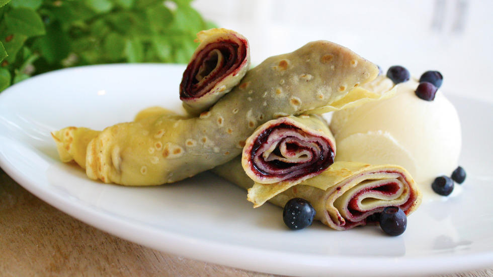

Pannekaker
4 Stk egg
3 Dl hvetemel
½ ts salt
5 Dl melk
1.Bland mel og salt. Tilsett halvparten av melken. Rør godt til en tykk og klumpfri røre. Tilsett resten av melken. Visp inn egg. La røren svelle i ca. ½ time
2.Smelt maragin i en god og varm stekepanne. Hell i en øse med pannekakerøre og vend på pannen, slik at røren legger seg i et jevnt lag. Snu pannekaken når den har stivnet på oversiden og blitt gyllenbrun på undersiden
3.Når pannekaken er stekt på begge sider, brettes den sammen og legges i et ildfast fat med lokk. Pannekakene holder da varmen, slik at alle kan spise sammen
